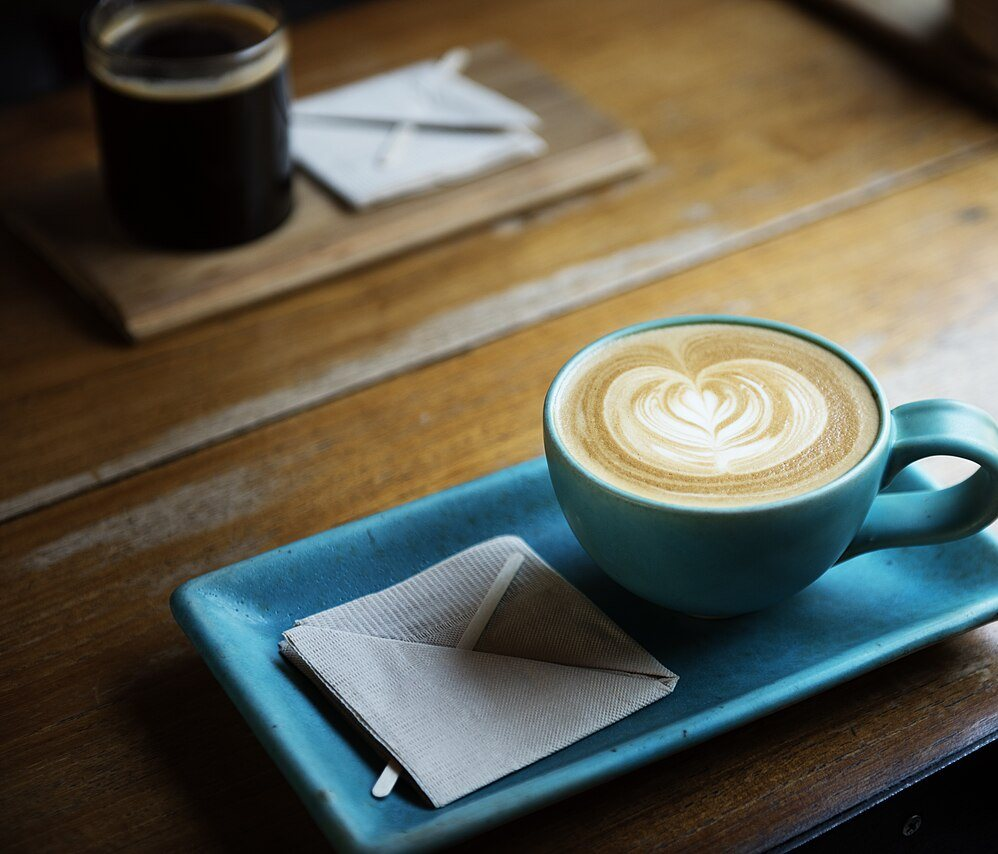
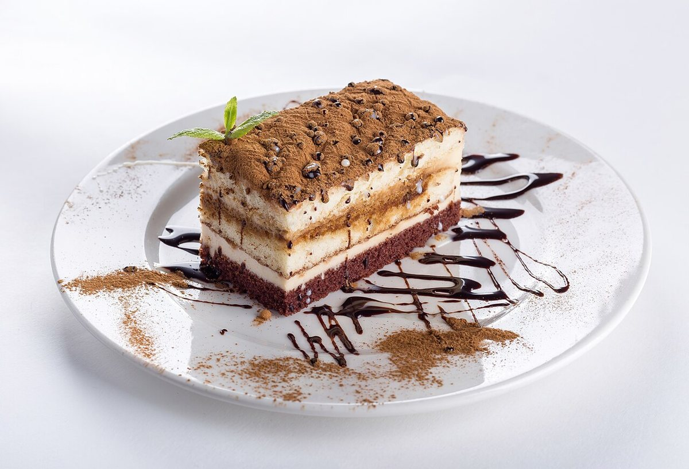
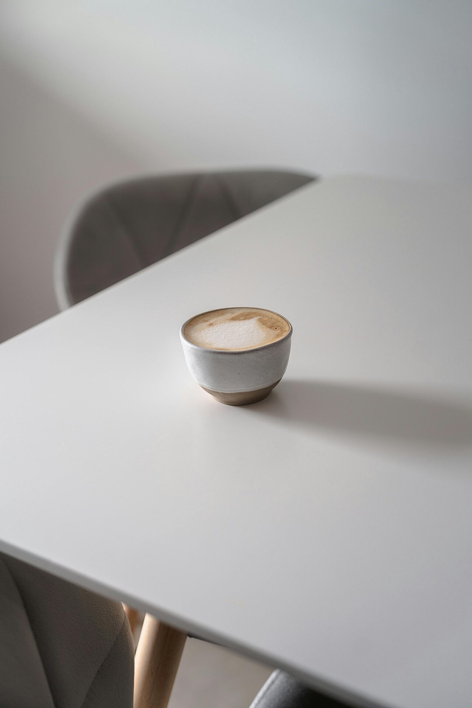
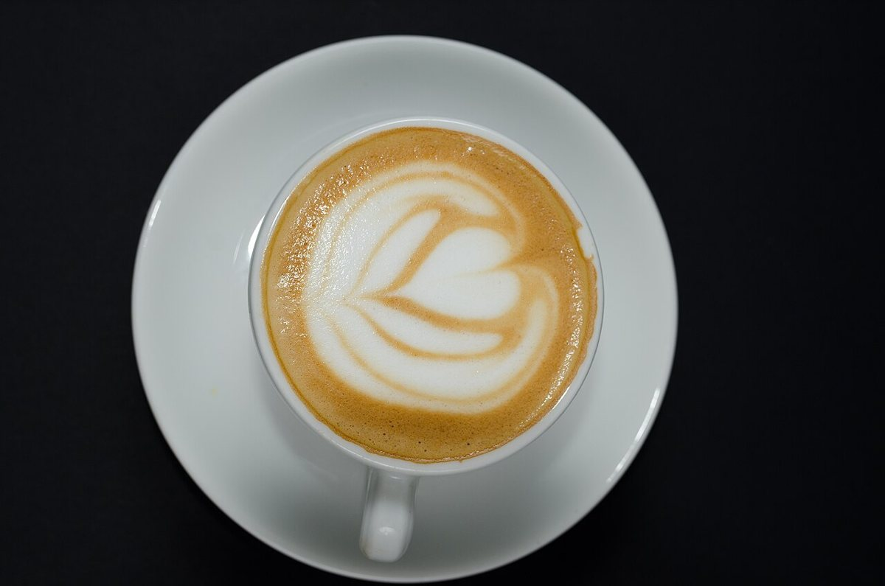
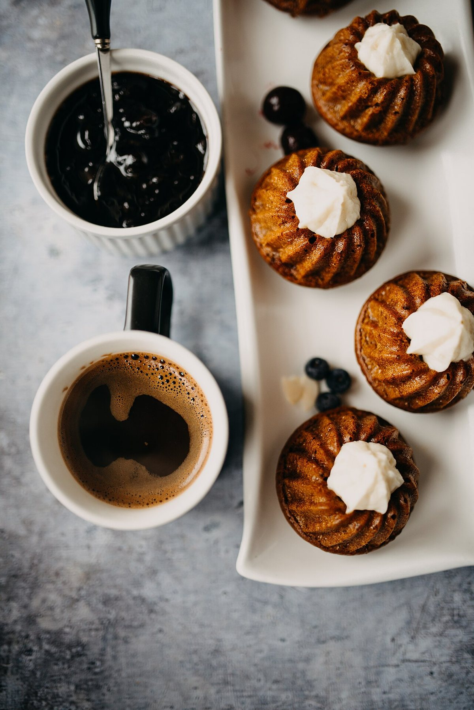
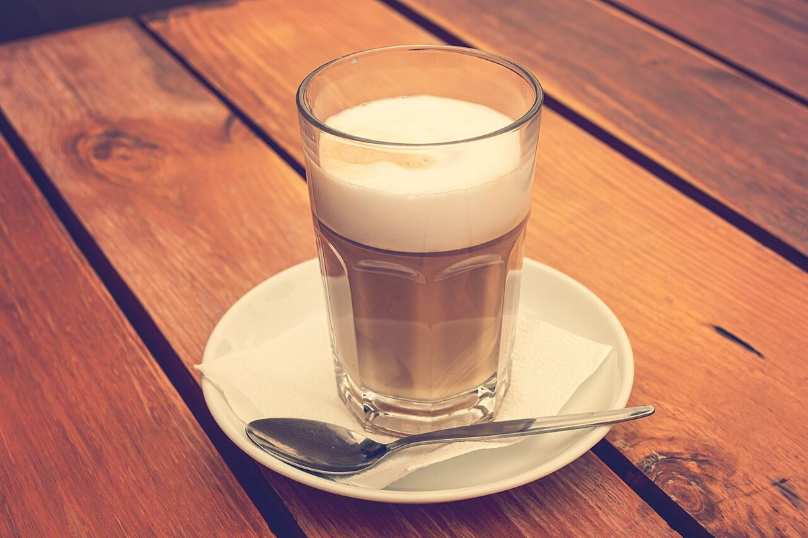

このお店
ラフという、カフェ。
北海道岩見沢市のカフェです。お店の詳しい情報は準備中です。最新の情報は、お電話またはInstagramからご確認ください。





掲載写真はフリー素材のイメージで、店舗の実際の様子ではありません。他地域で撮影されたもの、撮影地が不明なものを含みます。

北海道岩見沢市のカフェです。お店の詳しい情報は準備中です。最新の情報は、お電話またはInstagramからご確認ください。





掲載写真はフリー素材のイメージで、店舗の実際の様子ではありません。他地域で撮影されたもの、撮影地が不明なものを含みます。